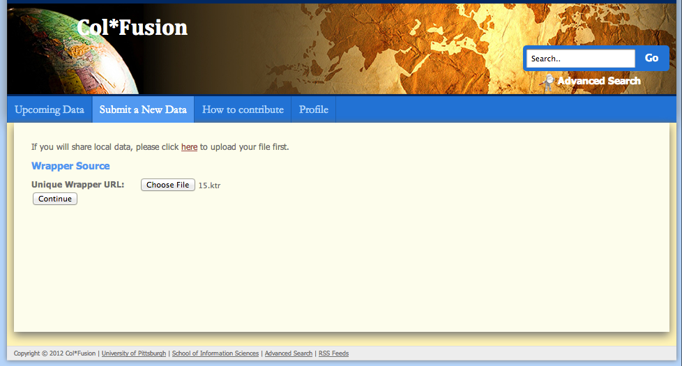
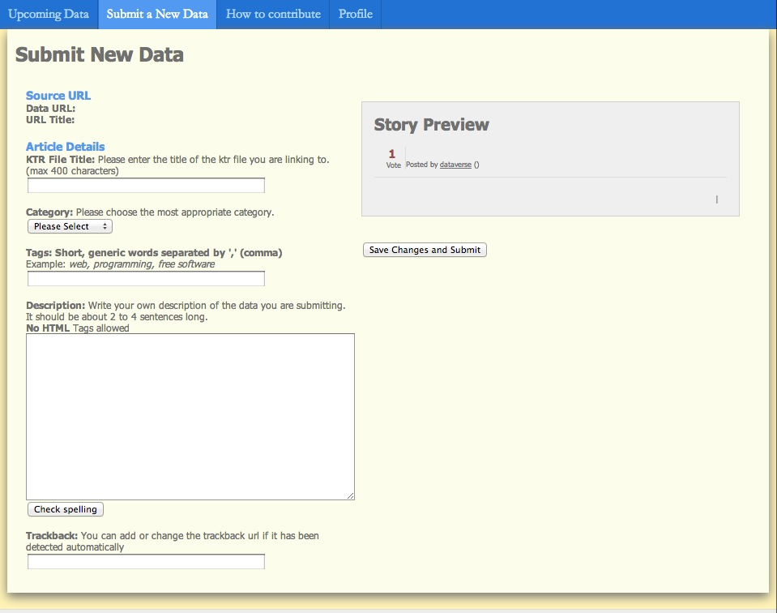

Register Your Wrapper
- In just a little bit, you will be redirected to our site to register your wrapper.
But before that, let us give you a little overview of how our registration process works.
- Once at the "Submit a New Data" page, as the first step, you will need to upload your wrapper (your ktr file) and then click "Continue" button.

- Our server will execute the wrapper and you will be able to see the second step of submission, if no error is detected.
- You will need to give your dataset all of the following: in this step.
A. Title
B. Description
- You can also tag your dataset with any descriptive tags you wish.
- And you will need to assign your dataset to one of our predefined subject categories.
This will make it easier for other users to find your dataset by using the category listings at the
top of every page.
- Once you click Save Changes and Submit, you will be able to see it
in the Upcoming Data feeds, in the category you selected, and many more.

- To Register Your Wrapper now, click one of the following links: